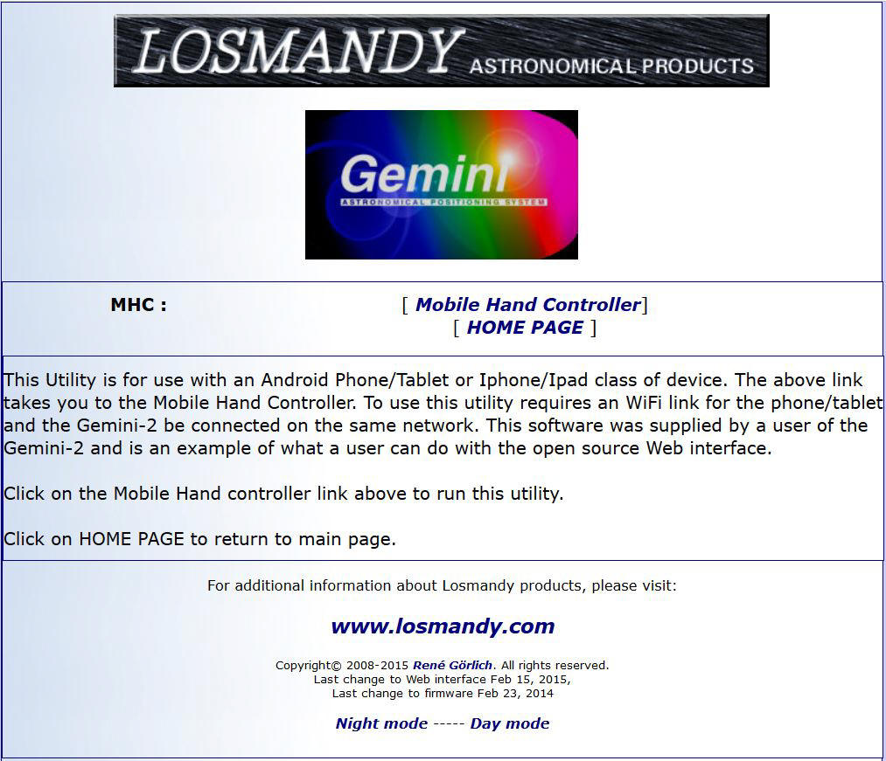

| Here is the Mobile hand controller disclaimer page. You will have to use this page to get to the mobile hand controller. The mobile hand controller is not a product of Losmandy/Hollywood General Machining or René Görlich. Here is a short youtube video by Hamza the Mobile hand controller it in operation. |
|

Please note for now only the Home link works here, but the Mobile Home Controller link is fully functional in your firmware if you have downloaded it after Feb 15, 2015 |